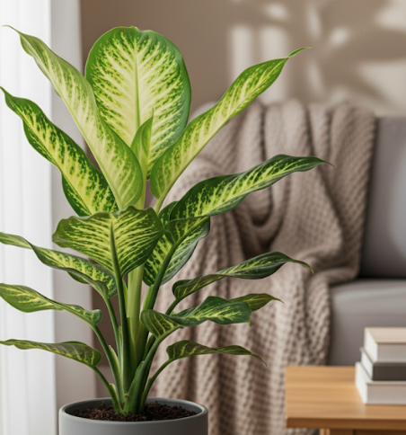

Comigo-Ninguém-Pode (Dieffenbachia spp.): Beleza Exótica e Cuidado Redobrado

Por Plantas & Gatos — seu guia de confiança sobre plantas ornamentais e segurança para pets
A Comigo-Ninguém-Pode é uma das plantas ornamentais mais populares do Brasil — e não é difícil entender o motivo. Suas folhas grandes e variegadas, marcadas por padrões únicos que combinam tons vibrantes de verde-escuro, verde-claro, creme e até amarelados, trazem um toque tropical e sofisticado a qualquer ambiente. Cada folha funciona como uma obra de arte natural, com manchas e listras que variam conforme a espécie e as condições de cultivo. Seja em salas de estar, escritórios ou varandas protegidas, ela transforma o espaço com sua presença exuberante e porte volumoso, podendo alcançar facilmente 1,5 metro de altura quando bem cuidada.
O Perigo Oculto: Entendendo a Toxicidade
Mas junto à sua beleza vem também a fama que justifica seu nome popular: trata-se de uma planta genuinamente tóxica para gatos, cães, pássaros e até humanos. A seiva leitosa da Dieffenbachia contém cristais microscópicos de oxalato de cálcio em forma de agulhas (chamados rafídeos), que funcionam como verdadeiros "arpões" quando entram em contato com tecidos vivos.
O que acontece em caso de ingestão:
- Irritação imediata e intensa na boca, língua, garganta e lábios
- Salivação excessiva (ptialismo), frequentemente espumosa
- Dificuldade para engolir (disfagia), que pode evoluir para inchaço da língua e obstrução parcial das vias aéreas
- Vômitos e desconforto gastrointestinal em casos de ingestão de quantidade maior
- Em humanos, pode causar perda temporária da voz (daí o nome em inglês "dumb cane" — planta muda)
Por isso, se você tem pets curiosos ou crianças pequenas em casa, é fundamental manter essa planta completamente fora do alcance — de preferência em prateleiras altas, suportes suspensos ou cômodos de acesso restrito. Vale lembrar que até o simples contato com a seiva (ao podar ou replantar) pode irritar a pele e olhos, então use sempre luvas ao manuseá-la.
Cultivo: Simples, Mas Com Pontos de Atenção
Apesar desse cuidado essencial de segurança, a Comigo-Ninguém-Pode continua sendo uma excelente escolha para quem busca folhagens resistentes e de relativamente baixa manutenção. Entender suas necessidades básicas garante uma planta vigorosa por anos:
Luminosidade
Ela prospera com luz indireta abundante e filtrada. Pense na iluminação do sub-bosque de florestas tropicais — claridade sem sol direto batendo nas folhas. Em locais muito escuros, suas folhas podem perder o contraste característico, ficando mais verdes uniformes e menos variegadas, além de crescer "estioladas" (caules alongados e fracos buscando luz). Uma janela voltada para leste ou oeste, com cortina leve, é ideal.
Rega
O solo deve permanecer levemente úmido, mas nunca encharcado. A regra prática é regar quando os 2-3 cm superficiais do substrato estiverem secos ao toque. O excesso de água é um dos principais assassinos da Dieffenbachia, levando ao apodrecimento das raízes. No inverno, reduza a frequência.
Umidade do ar
Como planta de origem tropical, ela aprecia ambientes com boa umidade relativa (acima de 50%). Se você mora em regiões muito secas ou usa ar-condicionado frequentemente, borrifar água nas folhas 2-3 vezes por semana ajuda a prevenir pontas secas.
Temperatura
Prefere temperaturas entre 18°C e 28°C — exatamente a faixa típica de ambientes internos. Evite correntes de ar frio ou posicioná-la próxima a aparelhos de ar-condicionado que soprem diretamente sobre ela.
Adubação
Durante a primavera e verão (período de crescimento ativo), forneça fertilizante líquido balanceado (NPK 10-10-10) diluído a cada 3-4 semanas. No outono-inverno, suspenda ou reduza drasticamente.
Limpeza
Limpe as folhas com pano úmido mensalmente para remover poeira e permitir melhor fotossíntese — sempre usando luvas!
Entre o Místico e o Prático
Curiosamente, o nome "Comigo-Ninguém-Pode" carrega uma aura de misticismo popular profundamente enraizada na cultura brasileira: há quem acredite que a planta afasta energias negativas, protege o lar de invejas, olho gordo e más intenções, funcionando como um escudo energético. Alguns ainda a consideram uma "planta-guardiã", capaz de absorver vibrações ruins do ambiente.
Embora a ciência não confirme esses atributos espirituais, o simbolismo cultural é poderoso e ajuda a explicar por que ela continua sendo presença constante em tantas casas, estabelecimentos comerciais e até consultórios brasileiros. Curiosamente, sua toxicidade "real" parece reforçar, no imaginário popular, essa ideia de proteção — como se a planta tivesse suas próprias defesas contra intrusos indesejados, sejam eles físicos ou espirituais.
Variedades Comuns no Brasil
Existem diversas espécies e cultivares de Dieffenbachia no mercado, cada uma com padrões foliares distintos:
- Dieffenbachia picta (ou maculata): A mais comum, com manchas cremosas irregulares
- Dieffenbachia amoena: Folhas mais alongadas com variegação branca nas nervuras
- Dieffenbachia camille: Centro das folhas quase totalmente creme-amarelado
- Dieffenbachia compacta: Versão mais baixa e densa, ideal para espaços menores
O Veredicto Final
Em resumo, a Comigo-Ninguém-Pode é uma planta imponente, carregada de simbolismo cultural e surpreendentemente fácil de cultivar para quem respeita suas necessidades básicas. Porém, ela exige atenção especial e responsabilidade quando convivemos com animais domésticos ou crianças pequenas. Não se trata de demonizar a planta, mas sim de conhecê-la profundamente.
Com o posicionamento estratégico correto e práticas de cultivo adequadas, é perfeitamente possível desfrutar de sua beleza tropical marcante sem colocar em risco a segurança dos nossos companheiros felinos, caninos ou dos pequenos exploradores da casa. Afinal, jardinagem consciente é também sobre escolhas informadas — e às vezes, isso significa reconhecer que algumas plantas, por mais belas que sejam, podem não ser adequadas para todos os lares.
Dica de ouro: Se você ama a estética da Dieffenbachia mas tem pets irremediavelmente curiosos, considere alternativas não-tóxicas com visual similar, como Calathea ou Maranta — plantas que oferecem folhagens vistosas sem os riscos associados.
← Voltar para o blog